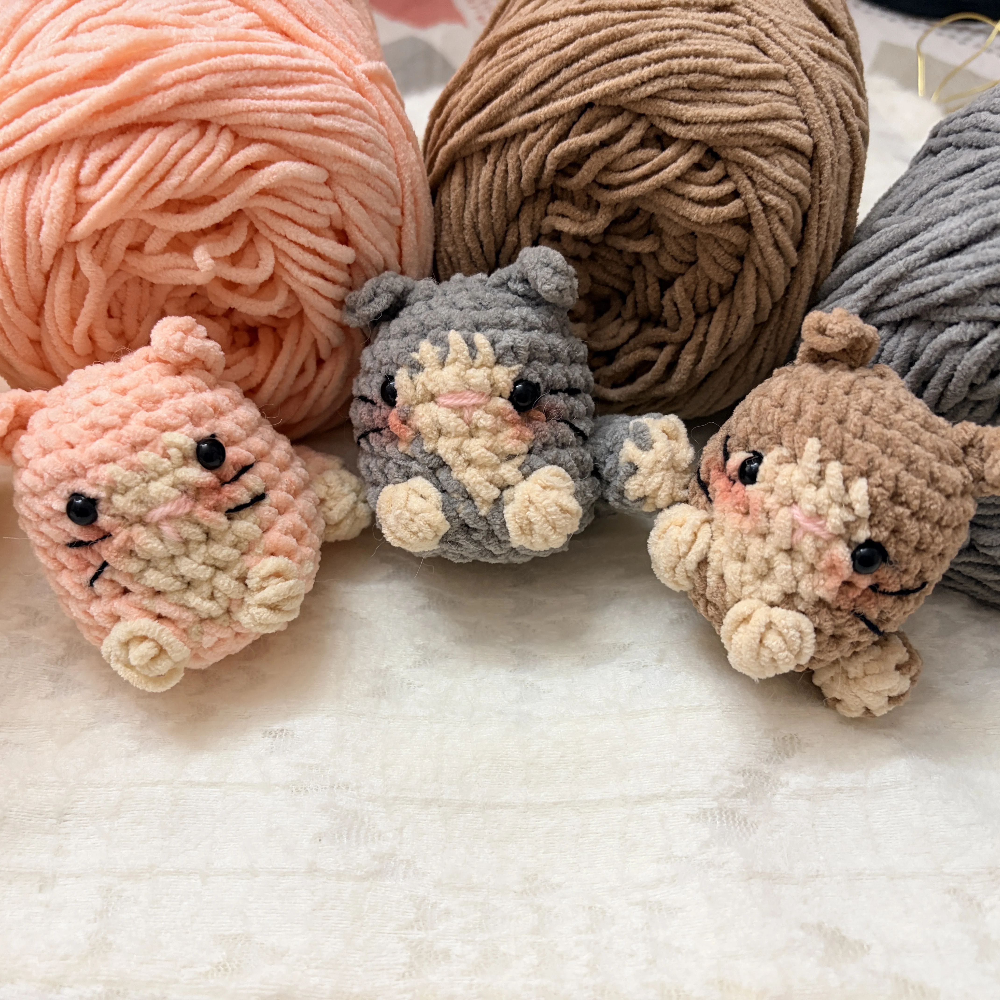
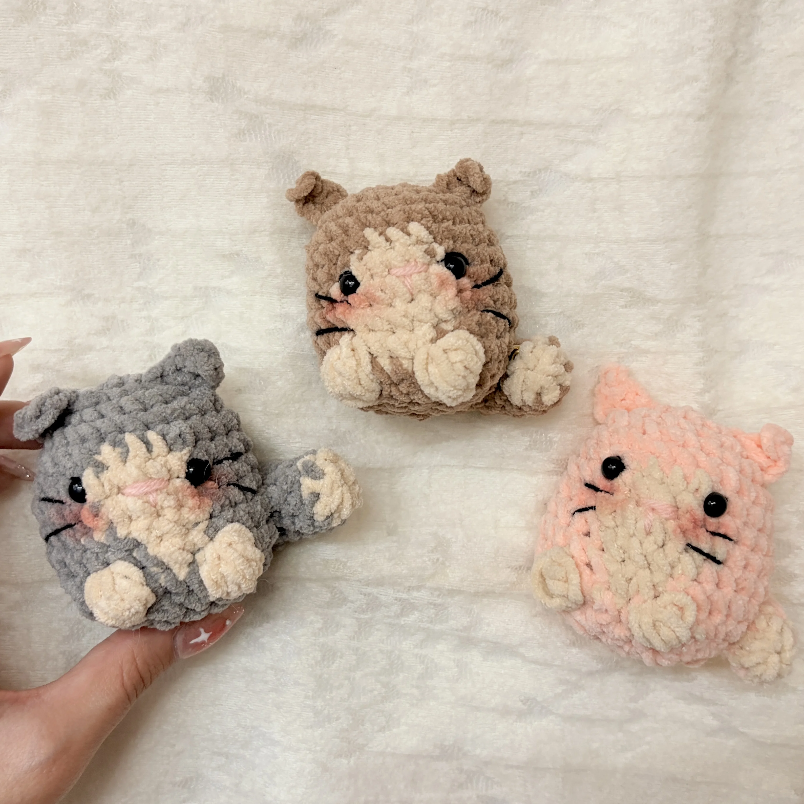

Free Crochet Pattern
how to crochet a cute mini cat plushie | amigurumi tutorial + free pattern (step-by-step)
Hi everyone! :) Today I’m sharing the written pattern for this mini cat plushie. This project is perfect for adding a bit of soft inspiration to your desk or bag.

About the Pattern
Hi everyone! :) Today I’m sharing the written pattern for this mini cat plushie. This project is perfect for adding a bit of soft inspiration to your desk or bag.
I really recommend you watch the video tutorial first for more clarity, especially for the color changes and assembly!
For this specific pattern, we will be using a magic ring to start. If you’re a total beginner and find the magic ring a bit tricky, don't worry! You can check out my bunny holding a heart tutorial for a no magic ring version that is super simple to follow
Whether you're using a magic ring or my alternative method, I’ve included all the stitch counts below to help you create your own cozy little friend. Happy crocheting!
Video Tutorial
I really recommend you watch the video tutorial first for more clarity, especially for the color changes and assembly.
Materials
- Weight 4 chenille yarn in 2 colors (Yarn A and Yarn B)
- 4 mm crochet hook
- Safety eyes or black yarn for embroidery
- Stuffing
- Yarn needle
Want to shop the materials?
Check out the materials here →Pattern Details
- Project: Mini Cat Plushie
- Yarn: Weight 4 chenille yarn
- Hook: 4 mm
Abbreviations
Written Pattern
How to Crochet the Mini Cat Plushie
1. Head & Body
We work in continuous rounds. Please use a stitch marker to track your first stitch!
Start with Yarn A.
Round 1 (total 6)
mr, 6sc.
Round 2 (total 12)
inc * 6.
Round 3 (total 18)
[1 sc, inc] — repeat around.
Round 4 (total 24)
[2 sc, inc] — repeat around.
Round 5 (total 24)
1 sc in every stitch around.
Round 6
6sc using Yarn A, 3sc using Yarn B, 15sc using Yarn A.
Round 7
5sc using Yarn A, 5sc using Yarn B, 14sc using Yarn A.
Round 8
4sc using Yarn A, 6sc using Yarn B, 13sc using Yarn A.
Round 9
Repeat Round 7.
Round 10
Repeat Round 6.
Round 11
5sc, 4dc cluster using Yarn B (this makes a little paw!), 3sc using Yarn A, 4dc cluster using Yarn B (second paw!), 14sc using Yarn A.
Round 12 (total 18)
[2 sc, dec] — repeat around.
Attach Safety eyes between the rounds specified in the video!
Round 13 (total 12)
[1 sc, dec] — repeat around.
Firmly stuff the head before moving to the next round.
Round 14 (total 6)
[dec] — repeat around to close. Fasten off and leave a tail.
To Finish
Close the circle by passing the needle through the outer loops of each stitch and pull tight.
2. Cat Ears (Make 2)
Insert your hook into the fourth round of the body and pull your yarn through.
ch4, skip 1ch, slst, sc, hdc, slst into Round 2 of the body.
ch1 and cut off the yarn, leaving a tail to weave in.
3. The Tail
Round 1
mr, 4sc into the magic ring (or use the chain method for a beginner-friendly start!).
Round 2 - Round 8
sc in each st around (total 4 sc per round).
Tip: Add a small wire to give the tail some structure and a little bit of stuffing for volume!
4. Assembly & Style
Sew the tail to the back of the body.
Use your yarn needle to embroider a tiny pink nose and whiskers for that extra aesthetic touch.
Looking for a simpler start? If the magic ring isn't for you today, remember to watch my bunny and bear video for a beginner-friendly no magic ring technique that works just as well for plushies!
5. More Ideas for your Mini Cat!
The "Coquette" Cat
Add a tiny Pinterest-inspired bow to one of the ears or around the neck for a trendy look!
Calico or Tuxedo Vibes
Use three colors of yarn instead of two to create unique spots or a "tuxedo" chest.
Purr-fect Keychains
Use a smaller hook and thinner yarn to turn this into a strawberry-style bag charm or keychain!
Seasonal Cats
Make a black cat with a tiny crochet rose for Valentine's Day or a white cat for a dreamy winter vibe.
6. Share Your Creations
Don't forget to tag me in your creations and visit my YouTube @StitchyDays for more step-by-step tutorials!
A Little Note from Stitchy Days ♡
Hi there
Thank you so much for trying one of my crochet patterns! I’m so happy to have you here, and I hope you enjoy making this project as much as I enjoyed creating it.
If you make something using this pattern, I’d love to see it! Feel free to tag Stitchy Days when you share your finished project. Seeing your creations means so much to me as I continue growing this little crochet corner.
Thank you for supporting my work and happy crocheting! ♡
